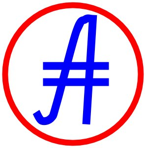

ВОЛАТИЛЬНОСТЬ АБСОЛЮТНАЯ
Волатильность считается для абсолютных валютных курсов. Волатильность считается как отношение статндартного отклонения к среднему значению абсолютного валютного курса за определенный временной промежуток в процентах. Пересчет происходит каждые два часа. Здесь представляена волатильность для дневных абсолютных валютных курсов. Цвет определяет положение относительно среднего значения в столбце среди других валют (красное - волатильность выше среднего, зеленое - волатильность ниже среднего). Ниже в таблице приведены волатильности для всех валют для разных временных промежутков. Сортировать рейтинги в таблице можно нажатием на соответствующем столбце. Переход к странице валюты осуществляется по ссылке из первого столбца.
...Загрузка даты...
...Загрузка таблицы...

Зеркала на www.abscur.ru и на prog815.github.io